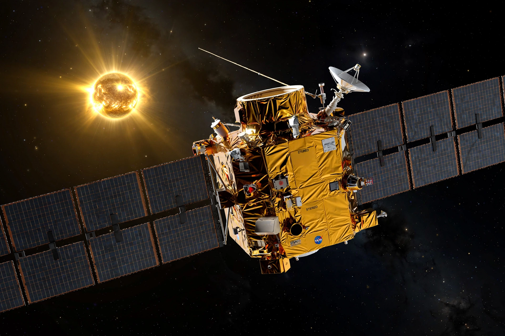

From Wikipedia, the free encyclopedia
| STEREO | |
|---|---|
 Artist's concept of a STEREO observatory | |
| Operator | NASA / Johns Hopkins APL |
| Launched | 26 October 2006 |
| Spacecraft | STEREO-A (Ahead), STEREO-B (Behind) |
| Orbit | Heliocentric, near 1 AU, drifting ahead of and behind Earth |
| Status | STEREO-A operating; contact with STEREO-B lost 2014 (brief recovery 2016) |
STEREO (Solar TErrestrial RElations Observatory) is a NASA solar observation mission consisting of two nearly identical spacecraft launched in 2006 into orbits around the Sun that cause one (STEREO-A, "Ahead") to drift progressively ahead of Earth and the other (STEREO-B, "Behind") to fall progressively behind. Their separated viewpoints provided the first stereoscopic, three-dimensional images of the Sun and of coronal mass ejections (CMEs) travelling through interplanetary space.
The twin observatories were launched together aboard a Delta II rocket from Cape Canaveral on 26 October 2006 and used a lunar gravity assist to enter their heliocentric orbits, drifting apart at about 22 degrees per year. By February 2011 the two spacecraft were on opposite sides of the Sun, enabling the first simultaneous view of the entire solar surface. Each carried four instrument packages: SECCHI (coronagraphs and heliospheric imagers), SWAVES (radio), IMPACT (in-situ particles and magnetic field) and PLASTIC (solar wind plasma composition).
STEREO's dual viewpoints let scientists track CMEs from the corona to Earth, measure their true speeds and directions, and study the structure of the solar wind — crucial for space-weather forecasting, since CMEs aimed at Earth are hard to measure from the Sun–Earth line alone. The mission also imaged comets (including sungrazers), zodiacal light, and the far side of the Sun invisible from Earth.
Contact with STEREO-B was lost on 1 October 2014 during a test of its safe mode ahead of superior conjunction. A brief recovery in August 2016 showed the spacecraft tumbling with low power; further attempts through 2018 failed and recovery efforts ended. STEREO-A continues to return data and, after passing behind the Sun, resumed its drift toward and past Earth's vicinity (flyby in 2023).